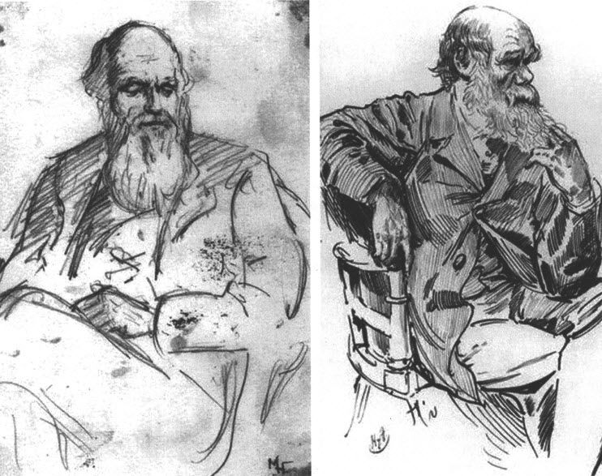
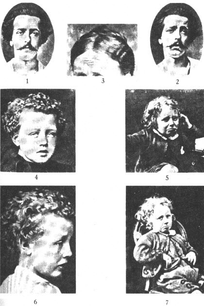
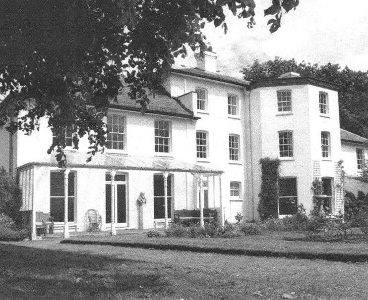

第7章
人类的特殊表情——意气消沉、忧虑、悲哀、沮丧、失望
·Low Spirits，Anxiety，Grief，Dejection，Despair·
为什么在某种忧郁的思想每次从脑子里发生出来的时候，就出现一种略微可以辨认出的嘴角下降动作，或者双眉内端略微上升的动作，或者是这两种动作同时出现，而且立刻接着出现略微渗出眼泪的情形。可以认为，上面所说的这些动作，就是那些在婴孩期间里很经常而长久地出现的尖叫发作的退化的痕迹。

达尔文的素描。分别为Marion Collier（赫胥黎之女）和Harry Furniss（1854—1925）所画。
悲哀对于身体组织的一般影响——眉毛在苦恼时候的倾斜——眉毛倾斜的原因——嘴角下降
在我们的精神受到一阵真正的悲哀发作的袭击以后，如果它的原因仍旧继续存在，那么我们就会陷入意气消沉的状态；或者我们也曾完全失望和沮丧。长期的身体上的苦痛，即使还没有达到苦恼的程度，也通常会引起同样的精神状态来。如果我们预想要受到苦痛，那么我们就会发生忧虑；如果我们没有希望去减轻这种苦痛，那么我们就会失望起来。
有些发生过度悲哀的人，时常像前面的一章里所讲到的情形一样，用激烈而几乎发狂的动作来设法使悲哀减轻；可是，如果他们的苦恼有些减轻，但是仍旧延长下去，那么他们就不再打算采取行动，只是停留不动和成为被动状态，或者只是时时把身体前后摇摆。同时血液循环变得缓慢起来；脸色变得苍白；肌肉疲累无力；眼睑下垂；头部低垂到紧缩的胸部处；双唇、面颊和下颚都随着本身的重量而下垂。因此，整个面部轮廓就变得伸长起来；据说，一个听到了坏消息的人的面部就向下垂。以前有一队火地岛土人就用双手把自己的面颊向下拉引，尽量使面部变得更长，借此来竭力向我说明他们的朋友——猎捕海豹的船的船长——的精神沮丧情形。彭耐特先生告诉我说，澳大利亚的土人在精神沮丧的时候，显出下颚下垂的样子来。在受到长久的苦恼以后，双眼变得晦暗，缺乏表情，并且时常含有少量眼泪。眉毛也时常倾斜，这是由于眉毛的内端向上升起的缘故。因此，在前额上产生特殊形状的皱纹；这些皱纹是和单单皱眉所产生的皱纹很不相同的；不过在有些情形里，也可以单单出现皱眉来。同时嘴角向下牵引，因此大家通常就认为这是精神沮丧的表征，以致几乎就把它当做俗语了。
在这种情形下，呼吸变得缓慢而且微弱，时常还被深长的叹息所打断。格拉希奥莱指出说，每次当我们的注意力长久集中在任何一个问题上面的时候，我们就会忘记去进行呼吸动作，而此后则作一次深长的呼吸，来减轻自己； (1) 可是，悲痛的人的叹息，则是由于呼吸缓慢和血液循环减慢而发生，所以也具有显著的特征。 (2) 因为一个处在这种状态下的人的悲哀，会时时再现出来，并且加强到发作性的程度，所以他发生的痉挛会影响呼吸肌肉，而使他以为在自己的喉咙里好像有一种东西在向上升起来；这种东西就是所谓歇斯底里症球（globus hystericus ）。这种痉挛动作，显然是和小孩啜泣时候的痉挛情形相似的，并且也是所谓一个人由于过废悲哀而窒息时候所发生的严重痉挛的残余。 (3)
眉毛的倾斜——在上面的叙述里，只有两点要获得进一步的说明；这两点是极其奇怪的，就是：眉毛的内端向上升起和嘴角向下牵引。关于眉毛方面，有时就可以看到，在一个人发生严重的沮丧或者忧虑的时候，他的眉毛就采取倾斜的位置；例如，我曾经观察到，有一个母亲在向她的生病的儿子讲话的时候，她的双眉就倾斜起来；有时，那些引起真正的或者假装的悲痛的十分微小的或者极其短暂的原因，也曾激起眉毛倾斜。眉毛所以采取这种位置的原因，就在于：额肌的中央筋膜（central fasciae）的最有力的作用，把某些肌肉的收缩部分地抑制下去（这些肌肉就是眼轮匝肌，皱眉肌和鼻三棱肌，它们共同要把眉毛向下牵引和收缩）。这些中央筋膜由于本身收缩而单单把眉毛的内端向上拉起；因为皱眉肌同时把双眉拉扯在一起，所以眉毛的内端就挤缩成为皱襞或者肿块。这种皱襞就是眉毛在倾斜时候的外貌方面的最显著的特点；我们可以从照相图版II的图2和图5里看到它。同时，眉毛由于各根小毛突出而有些竖起。克拉伊顿·勃郎博士也时常从忧郁病患者方面观察到，他们的眉毛长期保持倾斜的位置，因此“上眼睑特别显著地向上弓起”。在把照片（照相图II，图2）上的青年的右侧和左侧的眼睑作比较以后，就可以看出这种形状的痕迹来，因为他不能够把两条眉毛作相同程度的动作。从他的前额上的沟纹左右不相等的情形看来，也可以证明这一点。我以为，眼睑所以显著弓起，就只是由于眉毛内端向上升起而形成的，因为眉毛被举起而成弓形的时候，上眼睑也要随着略微作同样的移动。
可是，上述的肌肉相反收缩的最显著的结果，就表现在前额上所形成的特殊的沟纹。这些肌肉，在这样做着共同的而且相反的动作时候，就被大家简单地称做悲哀肌。如果一个人用收缩全部额肌的方法把自己的双眉扬起，那么横皱纹就通过前额的整个宽度部分；可是，在现在的情形里，只有中央筋膜收缩，因此只是在前额中部出现横沟纹。同时，位在双眉的外面部分上方的皮肤，由于眼轮匝肌外围部分收缩，而被向下牵引，因此变得平滑起来。双眉也由于皱眉肌的同时收缩而敛集在一起； (4) 后面的这种收缩动作就产生纵沟；这些纵沟使前额皮肤的外下部分去和中央的上升部分隔离开来。这些纵沟和中央的横沟纹结合在一起（参看照相图II，图2和图3），就在前额上形成一个可以和马蹄铁形状相比拟的印记；可是，更加严格地说来，这些沟纹形成四角形的三边。在成年人或者近于成年的人把双眉倾斜的时候，在他们的前额上就时常显著地出现这些沟纹；可是在幼年的小孩方面，由于他们的皮肤不容易起皱，就很少看到这些沟纹，或者只能够辨别出它们的痕迹来。

照相图版 II
在照相图版II的图3里，最清楚地表明出，在一个年轻的妇女的前额上出现这些特殊的沟纹；这个妇女具有一种有意去对所需的肌肉起作用的异常大的能力。因为在拍摄这张照片的时候，这个妇女正在专心一致地作着这种皱眉的企图，所以她的表情绝不是悲哀的表情；因此，我也就单单把她的前额印制出来。同一图版的图1是从杜庆博士的著作里复制过来的； (5) 它以缩小的尺寸表明出一个成为优秀演员的青年人在自然状态下的面部。在图2里，表明出他所扮演的悲哀表情，但是正像前面所讲到的，双眉并没有受到相等的作用。从下面的事实里就可以推断出这种表情是真实的：我曾经把原来的照片交给15个人观看，事先一些也没有向他们提出它所表明的意义，结果当中有14个人立刻回答说，他表明“绝望的悲痛”、“苦恼的忍受”、“忧郁”等等。图5的来历更加使人感到兴趣：我曾经望见一家店铺的橱窗里陈列着这张照片，于是为了要找出什么人拍摄它的起见，我就把它交给烈治朗德尔先生去看，并且向他指出这种表情是有多么大的悲伤。他就回答说，“是我拍摄它的；因为这个小孩在拍摄以前不多几分钟哭喊了一阵，所以它显然是悲伤的表情”。此后，他又取出一张这个小孩在安静状态时候被拍摄的照片给我看；现在我也把它复制，载在本书里（图4）。在图6里，可以看出眉毛倾斜的痕迹来；可是，这个图也像图7一样，是为了表明嘴角下降情形而提出来的；下面就将谈到这种情形。
只有少数人没有事先的练习而就能够有意地使悲哀肌发生动作；可是，在作了几次练习以后，就会有相当多的人成功地达到这一点，不过也有一些人仍旧是失败的。各种人的眉毛的倾斜程度，各不相同；不论这种动作是有意的或者无意识的，都是这样。有一些人显然具有异常强大的鼻三棱肌；他们的额肌的中央筋膜即使可以收缩得很强烈，像前额上的四角形沟纹的出现情形一样，但是这种收缩仍旧不能够把双眉的内端提升起来，只不过防止了它们不太低降得像在没有收缩时候的程度罢了。根据我所能够观察到的情形说来，小孩和妇女要比成年男人更加经常去使用悲哀肌。至少是成年人，很少由于身体上的苦痛而去使用悲哀肌，但是差不多专门由于精神上的痛苦而使用它们的。有两个人，曾经在作了一些练习以后，就成功地使悲哀肌动作起来；他们在用镜子照看自己时候看出，他们在使眉毛倾斜的时候，也同时不随意地使嘴角下降；在自然发生悲哀表情时候，常常出现这种现象。
这种自由使悲哀肌发生作用的能力，显然也差不多好像所有其他的人类的能力一样，是遗传而来的。有一个妇女，在她所出生的家族里已经产生很多著名的男女演员；她自己能够“用惊人的精巧方法”来扮演悲哀的表情；她曾经告诉克拉伊顿·勃郎博士说，她的家族里的所有的人都显著地具有这种能力。勃郎博士也曾经对我说，这种表情的遗传倾向，据说曾经传递到华耳脱·斯各特（Walter Scott）爵士所写的小说《红手套》（Red Gauntlet ）里所提出的家族的最后一代；可是，在这本小说里，描写到主人公在发生强烈情绪的时候，把前额收缩而出现马蹄铁形的印记。我曾经看到一个青年妇女，她的前额显然也差不多惯常作这样的收缩动作，而并不和她当时所发生的任何情绪有关。
悲哀并不太经常被使用，而且又因为这种动作时常是瞬时出现的，所以我们不容易观察到这种动作。虽然每个人在观察的时候普遍和立刻会辨认出这是悲哀或者忧虑的表情，但是在一千个从来没有研究过这个问题的个人当中，却找不出一个人能够详细地说明当时受苦者的脸上所发生的变化情形。因此，据我所已经注意到的情形说来，大概除了《红手套》这本小说和另外一本小说以外，在无论哪个文艺作品里，甚至都没有提出过这种表情的变化情形来；有人告诉我说，这另外一本小说的女作家，就是出于刚才讲到的那个著名的产生很多演员的家族里，所以可能她已经对这个问题特别注意到了。
古代希腊的雕刻家们很熟悉这种表情，例如从劳孔（Laocoon）和阿罗蒂诺（Arrotino）两个神像上就可以看到它；可是，杜庆博士指出说，这些雕像具有几条通过整个前额宽度的横沟纹，因此这就犯了解剖学上的重大错误；在近代的雕像方面，也有这种情形发生。可是，极其可能的是，这些惊人精确的观察者并没有犯什么错误，而是为了要表现出他们所雕刻的人像的美观起见，故意牺牲了真实，因为在大理石像的前额上刻出四角形沟纹来，恐怕也显不出壮丽的外貌来。根据我所能够发现的情形说来，即使是老画家，也显然是由于同样的原因，而不能够时常在图画上表达出这种表情的充分发展的状态来；可是，有一个对这种表情十分熟悉的妇女告诉我说，在佛罗伦萨（Florence）地方，有一幅“基督降架图”（Descent from the Cross）是弗拉·安日里科（Fra Angelico，就是Fiesole，1387—1455）所绘；在这幅图的右手方面的人像当中，有一个人就明显地表现出这种表情来；我也可以举出其他少数例子来作为补充。
克拉伊顿·勃郎博士接受我的请求，去仔细观察了他所管理的西赖定精神病院（West Riding Asylum）里的很多精神病患者所发生的这种表情；而且他也熟知杜庆博士所举出的几张表明悲哀肌的动作的照片。他告诉我说，在忧郁病患者方面，特别是在疑心病患者方面，经常可以观察到他们的这些肌肉发生强烈动作；他还说道，这两类病人由于这些肌肉惯常收缩，而具有经常性的线纹或沟纹；这些沟纹就成为这些病人的面相的特征。勃郎博士在相当长的期间里，替我观察了三个疑心病患者的情形，他们的悲哀肌长期收缩。当中有一个患者是51岁的寡妇，她曾经幻想到自己的内脏全部丧失，好像全身变成了中空的躯体。于是她就显出极其悲痛的表情来，并且在几个小时里，把自己的一双半屈的手彼此互相作有节奏的拍击。悲哀肌永远收缩，而上眼睑则向上弓起。这种状态一直继续了几个月；后来她恢复过来，而她的相貌也就回复到自然的表情。第二个患者也差不多表现出同样的特征来，不过还有他的嘴角也下降。
帕特利克·尼古尔先生也亲切地替我观察了塞塞克斯疯人院（Sussex Lunatic Asylum）里的几个病人；并且还对其中三个病人的情形作了十分详细的叙述；可是，在这里用不着再把它们举出来。尼古尔先生从他对于忧郁病患者的观察方面得出结论说，双眉的内端差不多时常多少有些向上升起，前额上的皱纹多少有些清楚地显现出来。他观察到，当中有一个青年妇女，她的前额上的皱纹经常略微跳动或者移动。有几个病人的嘴角下降，但是下降的程度时常只是轻微的。差不多时常可以观察到，有几个忧郁病患者的表情各有相当程度的差异。眼睑通常下降；眼睑的外角附近和下面的皮肤起皱纹。在这些病人的面部上，时常清楚地出现鼻唇沟，从鼻翼通向嘴角边；鼻唇沟很显著地出现在大哭的小孩的面部上。
虽然精神病患者的悲哀肌时常不断地起作用，但是他们在平常状态里有时也曾由于可笑的轻微原因，而无意识地发生瞬时的作用。有一个绅士用一件使人可笑的小礼物来报答一个青年妇女；她就假装发怒，并且当她向这个绅士斥责的时候，她的双眉就极度倾斜起来，而在前额上起有相当的皱纹。还有一个青年妇女和一个青年男子，双方都是精神非常奋发，正在一起极其迅速地热心交谈着；当时我就观察到，每次在这个妇女理屈而一时不能够迅速发言的时候，她的双眉就向上斜竖，同时在她的前额上形成长方形的沟纹。她就用这个方法每次发出受苦的信号来；在不多几分钟里，她一共发出了六次这种双眉倾斜动作。我当时丝毫没有把这种情形向他们提出来，但是在过了一段时间以后，我就请这个妇女设法把她的悲哀肌发动起来。当场还有一个能够随意发动悲哀肌的女郎就把我的意图向她表明。这个妇女就作了几次尝试，但是完全遭到失败；可是，像这种不能够相当迅速发言的轻微的受苦原因，竟足够去使她的悲哀肌再三地发生强有力的动作来。
绝不是只限于欧洲人具有这种悲哀肌收缩而发生的悲哀表情；显然一切人种都普遍具有这种表情。至少是在印度人、但加尔人（印度山区土人种族之一，因此也属于一个完全和印度人不同的民族）、马来人、黑人和澳大利亚人方面，我已经获得了确实可信的报道。关于澳大利亚人方面，有两个观察者对我的征询作了肯定的回答，但是并没有作出详细的说明。可是，塔普林先生在我的叙述文字后面，添写了几个字：“这是正确的”。至于说到黑人方面，那么上面所讲到的那个告诉我关于弗拉·安日里科的图画的妇女，曾经看见一个在尼罗河里划船的黑人；当这个黑人遭遇到障碍物的时候，她就观察到，他的悲哀肌起有强烈的动作，同时他的前额的中部明显地起皱。吉契先生观察了马来半岛上的一个马来人；在这个土人发生悲哀的时候，他的嘴角下降得很大，双眉倾斜，同时在前额上出现深刻的短沟纹。这种表情所继续的时间很短；吉契先生指出说，这“是一种奇特的表情，极像一个人受到某种巨大损失而打算要哭喊出来的样子”。
在印度方面，爱尔斯金先生发现，土人们都很熟悉这种表情；加尔各答植物园里的斯各特先生曾经亲切地寄给我一篇关于两个事例的详细叙述。有一次，他隐身在树丛里一段时间，观察一个很年轻的但加尔族妇女在看护她的将死的婴孩时候的情形；这个妇女从那格浦尔（Nagpore，或者Nagpur在中央省里）到加尔各答来，是植物园里的一个工人的妻子。斯各特先生当时清楚地看到她的双眉的内端上升，眼睑下垂，前额中部起皱，而嘴则略微张开，同时嘴角下降得很大。此后，斯各特先生从树木的屏障背后走出来，向这个可怜的妇女谈话，她忽然惊起，痛苦的眼泪奔涌地流出来，并且哀求斯各特先生医治她的婴孩。第二个事例是关于一个印度土人方面的；这个土人由于生病和穷困，不得不出售自己心爱的山羊。他在受到了价款以后，多次轮流瞧看自己手里的钱和已经出售的山羊，好像是犹疑不决，到底要不要退回这笔钱。他走到这头已经被系缚而正将被牵走的山羊身边，于是这头山羊就用后脚起立，并且舔起他的手来。当时这个人的双眼左右转动，他的“嘴有一部分闭合，而嘴角则极其显著地下降”。最后，这个可怜的人显然已经下定决心，认为他必须和自己的山羊分别；这时候斯各特先生就看到，他的双眉略微倾斜起来，在眉毛的内端显现出特征性的皱襞或者胀大部分来，但是在前额上没有出现皱纹。这个人就这样呆站了一分钟，于是长叹一声，眼泪涌出，举起双手来，向山羊祝福，接着转过身子，不再去看山羊而一直走开去了。
眉毛在苦恼时候的倾斜——在几年里面，我好像还没有遇见过一种有像现在我们所观察的表情这样十分复杂的表情了。为什么悲哀或者忧虑单单只引起额肌的中央筋膜连同眼睛周围的肌肉一起收缩呢？在这里，我们好像遇见了一种以表现悲哀为唯一目的的复杂动作；可是，这种表情比较稀有，时常会被我们忽略过去。我以为，这种说明并不像最初所认为的那样困难。杜庆博士提供了一张以前讲到的青年的照片；这个青年在朝上向着一个发光强烈的表面瞧看的时候，就不随意地过分收缩自己的悲哀肌。我本来已经完全忘记了这张照片；后来在一个非常明朗的白天，当太阳光正从我的背后向前照射的时候，我骑马前进，遇到一个女郎；当她向我瞧看的时候，她的双眉就极度倾斜，并且在前额上出现相当的沟纹。以后还有几次，在相似的情况下，我也观察到同样的双眉倾斜的动作。我回家的时候，我就召集自己的三个小孩，不向他们提出任何有关于我的目的的说明，请他用尽可能长久的时间和尽可能大的注意力，去瞧望一棵高大树木的树顶，而这棵树正耸立在极其明亮的天空背景上。当时所有这三个小孩的眼轮匝肌和鼻三棱肌，都由于眼睛网膜的兴奋所发生的反射作用而强烈收缩起来，以便去保护双眼，而避免受到明亮光线的侵害。可是，他们仍旧尝试竭力向上瞧看；于是可以观察到，一面是额肌的全部或者只是中央部分，另一面是几种使眉毛下降和使眼睑闭合的肌肉——这两方面的肌肉在作有趣的斗争，同时发生痉挛的抖动。鼻三棱肌作着不随意的收缩，引起鼻梁上出现深刻的横皱纹。在这三个孩子当中，有一个孩子的全部眉毛，因为额肌眼睛周围的肌肉彼此轮流收缩，而发生瞬时间的一升一降的动作，所以整个前额的宽度部分也就轮流地起皱和恢复平滑。其余两个小孩的前额，只是中央部分起皱，因此产生出长方形沟纹来；他们的双眉倾斜起来，而同时双眉的内端起皱襞和胀起；当中一个小孩表现得轻微，而另一个小孩则表现得十分显著。这种在眉毛倾斜程度方面的差异情形，显然是由于它们的一般移动能力的差异而发生，也由于鼻三棱肌的强度差异而发生。在这两种情形里，双眉和前额在强烈光线的影响下所发生的各种特有的细节上的变化情形，正和在悲哀或者忧虑的影响下的情形十分相同。
杜庆博士肯定说，鼻三棱肌要比眼睛周围的其余肌肉较少受到意志的支配。他指出说，有一个青年男子，能够使自己的悲哀肌动作得很显著，而且也能够同样使其他的面部肌肉动作，但是却不能把鼻三棱肌收缩。 (6) 可是，这种能力显然无疑是随着各人而不同的。鼻三棱肌是用来把眉心的前额皮肤连同双眉的内端一起向下牵引的。额肌的中央筋膜是鼻三棱肌的对抗者；如果鼻三棱肌的动作受到特殊的阻止力量，那么这些中央筋膜就一定发生收缩。因此，在那些具有强大的鼻三棱肌的中央筋膜就一定会行动起来；同时它们的收缩如果有足够的强烈，而可以制服鼻三棱肌，那么在和皱眉肌和眼轮匝肌一同收缩的时候，就会像上面所讲到的状态那样，对眼睑和前额起有作用。 (7)
我们已经知道，在小孩尖叫或者哭喊的时候，他们首先为了要把眼睛压缩，因而保护双眼而避免过分充血，其次是由于习惯，而把眼轮匝肌、皱眉肌和鼻三棱肌收缩起来。因此，我们就可以从小孩方面预料到，当他们想努力防止要发生的哭喊发作的时候，或者是在要制止哭喊的时候，他们就会抑制上面所讲到的肌肉的收缩，正像我们朝上瞧看明亮的光线时候的情形一样；因此可以知道，额肌的中央筋膜就会时常发生作用。因此，我开始亲自去观察小孩在这种情形时候的动作，并且还请求另一些人，包括几个医生在内，也去进行同样的观察。因为小孩的前额不像成年人那样容易起皱，它们这些肌肉所特有的对抗作用并不怎样明显可见，所以就必须仔细去观察它。可是，我立刻发现，悲哀肌在这些情形下极其经常发生明显的动作。如果把所有已经观察到的事例都列举出来，那就太啰嗦了；我现在只举出少数几个例子来谈谈。有一个年纪一岁半的女孩，受到其他几个小孩欺侮；在她流泪哭喊以前，她的双眉就明显地倾斜起来。还有一个年纪较大的女孩，也观察到她的双眉倾斜，同时双眉的内端明显地起皱，而且嘴角也同时向下牵引。当她一开始流泪哭泣的时候，面貌全部发生变化，而这种特殊的表情就消失了。还有一个幼小的男孩因为种牛痘而尖叫和激烈哭喊起来；在种好牛痘以后，外科医生就送给他一只预备作为观察他的表情用的甜橙，因此这就使他非常快活起来。当他停止哭喊的时候，就观察到一切特征性的动作，包括前额中央部分的长方形皱纹的形成在内。最后，我曾经在路上遇见一个三四岁的小女孩；她被狗所惊吓；当我询问她为什么要啜泣的时候，她就停止啜泣，于是她的双眉立刻变得极度倾斜起来。
因此在这里我深信不疑地认为，我们已经获得一个解决下面问题的钥匙，这个问题就是：为什么额肌的中央筋膜和眼睛周围的肌肉，在受到悲哀的影响时候会发生彼此相反的收缩，而且不论它们的收缩像忧郁病患者的情形那样长期继续发生，或者由于细微的悲痛原因而暂时发生，都是这样的呢？我们已经知道，我们全体都像婴孩一样，都会在尖叫时候为了保护自己的眼睛，而多次收缩眼轮匝肌、皱眉肌和鼻三棱肌；我们以前的祖先们在很多世代里也作过同样的动作；虽然随着年纪的长大，我们在感到痛苦的时候容易去阻止自己发出尖叫声来，但是我们由于长期的习惯，却时常不能够去阻止上面所说的肌肉轻度收缩；如果这种收缩情形轻微，那么实际上我们也绝不能从自己方面观察到它，也不能够去设法阻止它。可是，鼻三棱肌显然要比其他有关的肌肉更少受到意志的支配；如果它们非常发达，那么这就只能够靠了额肌的中央筋膜的对抗性收缩来阻止它们的收缩。如果这些筋膜收缩得很强烈，那么接着就必然会发生的结果，就是：双眉被牵引向上而倾斜，它们的内端起皱襞，而且在前额的中央部分形成长方形沟缝。因为小孩和妇女要比男人更加容易哭喊，还有成年的男女除了精神上的痛苦以外极少哭泣，所以我认为，我们就可以理解到，为什么可以看到，小孩和妇女要比男人更加经常地使悲哀肌动作起来；还有成年男女单单由于精神痛苦而发生这种情形。在有几个前面所记述的事例里，例如在那个可怜的但加尔族妇女和印度土人的两个例子里，在悲哀肌的动作发生以后，就迅速接着出现苦痛的哭泣。在所有各种痛苦里，不论痛苦程度的大小，由于长期的习惯，我们的脑子就有倾向要发布一种使某些肌肉收缩的命令，好像我们仍旧还是一个正要尖叫起来的婴孩似的；可是，我们可以靠了意志的惊人力量和由于习惯，而部分地抗阻这种命令；还有，至于说到抗阻的方法方面，那么这是无意识地发生的。
嘴角下降——这种动作是由于口角降肌（depressores anguli oris ）牵引而发生的（参看绪论，图1 和图2 里的肌肉K）。这种肌肉的纤维，向下方分散，而且和向上方的收敛端一同附着于嘴角周围和略近嘴角的下唇上。 (8) 有些纤维显然是大颧肌的对抗者，还有一些纤维则是有几种连通到上唇外部的肌肉的对抗者。口角降肌在收缩时候，就把嘴角连上唇的外部一起向下和向外牵引，甚至也略微把鼻翼向下牵引。在把嘴闭紧而使这种肌肉收缩，那么上下两唇的接合线就形成一条具有向下弯曲的曲线， (9) 同时双唇本身则通常略为突出，特别是下唇有这种情形。烈治朗德尔先生所拍摄的两张照片（照片照相图II，图6和图7），就清楚地表明出这种状态的嘴形来。前图（图6）的男孩在被另一个男孩打了一记耳光以后，才停止哭喊；正在这个适当的时机，就把他的表情拍摄了下来。
每一个对这个问题有过研究著述的人，都观察到，由于这种肌肉的收缩而显现出意气消沉、悲哀或者沮丧的表情来。把一个人说做是“嘴向下垂”，也就是和把他说做是意气沮丧的意义相同。根据前面已经讲到过的克拉伊顿·勃郎博士和尼古尔先生的权威意见，可以时常看到忧郁病患者的嘴角下降的情形；而在勃郎博士寄赠给我的几张有强烈的自杀倾向的病人的照片上，很清楚表现出这种情形来。从各种不同的种族的人方面，就是从印度人、印度的黑色皮肤的高山族人、马来人和牧师哈格纳乌尔先生向我所报道的澳洲土人方面，都曾经观察到这种情形。
在婴孩发出尖叫的时候，他们用力收缩眼睛周围的肌肉，因此也就把上唇向上提升；又因为他们不得不把嘴张大开来，所以那些连通到嘴角的降肌也起有强烈作用。这种情形就通常（但不是经常不变地）引起下唇两侧靠近嘴角处发生轻度的角形弯曲。在上下两唇受到这种作用以后，结果就使嘴的形状变成近于长方形。在婴孩还没有激烈地尖叫起来的时候，特别是在他们刚正开始尖叫或者停止尖叫的时候，就可以最清楚地看到这种降肌的收缩情形。根据我从自己的婴孩（年龄在6星期、2个月或者3个月之间）方面所作的连续观察结果，当时他们的小小的面部具有一种极其可怜的表情。有时，当他们作着反对哭喊发作的挣扎时候，嘴的轮廓就弯曲得极其厉害，真好像是马蹄铁的形状了；同时，这种悲伤的表情就变成了滑稽可笑的漫画形象。
口角降肌在意气消沉或者沮丧的影响下发生收缩的情形，显然也和眉毛倾斜的情形一样，可以用相同的一般原理来加以说明。杜庆博士告诉我说，他根据自己多年来的长期观察结果得出结论，认为它是最少受到意志支配的面部肌肉之一。实际上，从刚才所说的关于婴孩在犹疑不决地开始要哭喊或者努力要停止哭喊时候的表情方面，就可以推断出这个事实来，因为这时候他们通常支配面部的其他所有肌肉要比支配口角降肌更加有成效。有两个丝毫不知关于这个问题的理论的卓越的观察者（当中有一个人是外科医生），曾经替我仔细观察了几个年纪较大的孩子和妇女；在观察的时候，这些孩子和妇女带有几分反对的挣扎，极其缓慢地逐渐接近于流泪哭泣的状态；这两个观察者都确信说，口角降肌总是在任何其他的肌肉以前开始动作起来。正因为在很多世代的婴孩期间里，口角降肌曾经多次发生强烈的作用，所以每次在婴孩时代以后的一生期间里，一遇到甚至是轻微的痛苦，神经力量就根据长期联合性的习惯原理，具有一种流到这些肌肉方面去的倾向，也像流到其他各种面部肌肉去的情形一样。可是，因为口角降肌要比其他多数肌肉都略微较少受到意志的支配，所以我们就可能预料说，当其他的肌肉还处在被动状态的时候，口角降肌时常会作轻微的收缩。值得使人注意的是，口角多么微小的下降，就会使面貌具有意气消沉或者沮丧的表情；因此，口角降肌在作极其轻微的收缩时候，就已经足够流露出这种精神状态来。
在这里，我可以举出一个琐细的观察来，因为它可以用来总括我们现在所讨论的问题。曾经有一个老年妇女，在火车里和我几乎相对地坐着，带有一种舒适而且出神的表情。当我向她瞧看的时候，我看到她的口角降肌开始极其微弱地而且确实无疑地收缩起来；可是，因为她的面貌仍旧同以前一样平静，所以我就以为这种收缩多么毫无意义，而且多么会容易使人受骗。当这个想法正在我的头脑里浮现出来的时候，我就看到，突然泪水充满了她的双眼，几乎向外流出，同时整个面部下垂。这时候，虽然无疑在她的头脑里出现了一种苦痛的回忆，大概是她回想到了早已夭折的孩子。每次在她的感觉中枢受到这样的兴奋时候，就有一定的神经细胞，由于长期的习惯，而立刻把命命传达给所有呼吸方面的肌肉和嘴的周围的肌肉，使它们作哭喊发作的准备。可是，这道命令被意志所撤销了，或者更加确切地说来，是被后来所获得的习惯所撤销了，因此所有肌肉都服从于意志，但是只有口角降肌对它有轻度的违抗。嘴甚至也没有张开来；呼吸也并不急促；除了这种把嘴角向下牵引的肌肉以外，其他的肌肉都没有受到影响。我差不多可以肯定地说，每次在这个妇女的嘴开始从她的不随意地和无意识地采取这种相当于哭喊发作的形状时候，我们就可以差不多肯定说，应该有某种神经冲动沿着长期惯熟的通路，被传送到呼吸方面的各种肌肉、眼睛周围的肌肉和那个支配血液向泪腺输送的数量的血管运动中枢。实际上，这个妇女的眼睛里略微合泪的情形，就清楚地证明了神经冲动达到泪腺方面的事实；因为泪腺要比面部肌肉更少受到意志的支配，所以我们也能够理解到这一点。同时，毫无怀疑的是：眼睛周围的肌肉也有几分收缩的倾向，好像是为了要保护眼睛以免它们过分充血似的。但是这种收缩完全被压制下去，所以她的双眉仍旧平滑无皱。要是她的鼻三棱肌、皱眉肌和眼轮匝肌，也像很多人的这些肌肉一样，很少服从于意志的支配，那么这些肌肉恐怕也会略微受到一些作用；同时额肌的中央筋膜也恐怕会以反抗方式收缩起来，她的眉毛也会倾斜起来，而且在前额上就会形成长方形沟纹。这时候，她的面貌恐怕也会比原来的样子更加明显地表现出沮丧的状态来，或者甚至更加明显地表现出悲哀的状态来。
我们在认识了这样一些事实经过的阶段以后，就可以去理解到，为什么在某种忧郁的思想每次从脑子里发生出来的时候，就出现一种略微可以辨认出的嘴角下降动作，或者双眉内端略微上升的动作，或者是这两种动作同时出现，而且立刻接着出现略微渗出眼泪的情形。神经力量的动流，沿着几条惯熟的通路被传送出去，并且对于意志虽由于长期的习惯而仍旧起有很大的抑制力量的任何部位都会发生影响。可以认为，上面所说的这些动作，就是那些在婴孩期间里很经常而长久地出现的尖叫发作的退化的痕迹。在这种情形里，也像在很多其他情形里一样，这些把人类面貌上的各种各样表情形成起来的原因和结果互相联系起来的环节，的确是惊人的；而且这些环节还向我们表明出一定的动作的意义；每次在一定的情绪在我们的心头发生出来的时候，我们就会不随意地和无意识地去采取这些一定的动作。

今日达尔文在党豪斯的别墅
————————————————————
(1) ［维克多尔·卡罗斯（Vitor Carus）教授请著者去注意到纳西（Nasse）的文章；这篇文章载在梅克耳（Meckel）所编的德国生理学论文集（Deutches Archiv für Physiologie ，第1卷，1816年，第1页）里；在这页上叙述了这种特征性的叹息类型。］
(2) 上面所记述的说法，一部分是从我自己的观察方面得来，但是主要部分是从格拉希奥莱方面得来《人相学》，第53页和第337页；关于叹息方面，第232页）；他已经细致研究了整个这方面的问题。还可以参看赫希克（Hushke）的著作；《表情和人相学》，《生理学片断》（Mimices et Physiognomices，Fragmentum Physiologicum ），1821年，第21页。关于眼睛晦暗的情形方面，可以参看皮德利特的著作：《表情和人相学》，1867年，第65页。
(3) 关于悲哀对于呼吸器管的作用方面，可以去特别仔细参看贝尔爵士的著作：《表情的解剖学》，第二版，1844年，第151页。
(4) 在上面所提出的关于使眉毛变得倾斜的方法的叙述里，我依从着那种显然成为所有解剖学家的一般意见的说法；我曾经为了写述上面所提出的几种肌肉的动作而查看过这些解剖学家的著作，或者曾经和他们谈论过。因此，在本书的所有各处，我就对于皱眉肌、眼轮匝肌、鼻三棱肌部额肌的动作都采取相似的见解。可是，杜庆博士认为（而他所提出的每个结论，都值得使人作郑重的考虑），皱眉肌——就是他所称做的Sourcilier ——把双眉的内角举起，并且在和眼轮匝肌的上侧与内侧部分作相反的行动，也在和鼻三棱肌作相反的行动（参看《人相的机制》，1862年，对折本，说明书的第5条和图19—29；八开本，1862年，说明书第43页）。可是，他承认说，皱眉肌把双眉挤集在一起，在鼻梁的上方引起纵沟纹，或者引起蹙额。其次，他又认为，皱眉肌和上眼轮匝肌共同对双眉的外侧三分之二部分起作用；这两种肌肉在这里就和额肌发生对抗行动。在根据亨列的面部肌肉图（木刻图，就是前面绪论里的图3）来作判断的时候，我就不能够理解，为什么皱眉肌会依照杜庆所叙述的方法起作用。还有，关于这个问题，也可以参看唐得尔斯教授提出的说法，载在《医学文摘》（Archives of Medicine ），1870年，第5卷，第34页。武德先生是大家都知道的一位细致研究过人体肌肉的科学家；他曾经告诉我说，我所提出的关于皱眉肌的动作的说明是正确的。可是，这对于眉毛倾斜所引起的表情方面，绝不是什么重要的一点，而且对于它的起源的理论也并没有多大的重要关系。
(5) 我在这里向杜庆博士表示深切的感谢，因为他允许我从他的对折本的著作里用胶版印刷法复制了这两张照片（图版II，图1和图2）。在上面所提出的关于皮肤在双眉发生倾斜时候形成沟纹的说法当中，有很多就是从他关于这个问题的卓越论述方面借取来的。
(6) 杜庆：《人相的机制》，册页本，第15页。
(7) ［克恩博士曾经获得机会，去用电流对一个刚才受到绞刑而死的罪犯的肌肉起作用。他的实验已经肯定地得出结论，就是：鼻三棱肌是“后额肌（occipito-frontal ）的中央部分的直接对抗者，而后者也是前者的直接对抗者”。参看克恩的文章，载在《费拉得尔菲亚医学院学报》（Transactions of the College of Phyicians of Philadelphia ），1875年，第104页。］
(8) 亨列：《人体解剖学手册》，1858年，第1卷，第148页，图68和图69。
(9) 关于这种肌肉的动作的说明方面，可以参看杜庆博士的著作：《人相的机制》，册页本，1882年，VIII，第34页。